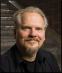
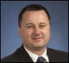
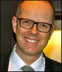
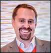
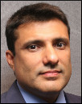
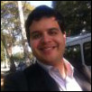
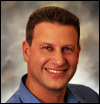
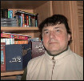
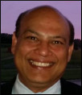

About JCP
Get Involved
Community Resources
Community News
FAQ
Contact Us
About JCP
Get Involved
Community Resources
Community News
FAQ
Contact Us

|
|
Java Community Process: Executive Committee Elections Nominees for 2014

|
The 2014 Fall Executive Committee Elections have started. This year, as defined in the JCP 2.9 Process Document, 8 Ratified and 5 Elected Seats are open for re-election. Since we are transitioning to JCP 2.10 in 2015, all the Elected Seats will serve a one year term.
As part of the "JCP Public Executive Committee Face-to-Face Meeting", we hosted a "Meet the JCP Executive Committee Candidates" (UGF9734) at JavaOne San Francisco on Sunday, 28 September at 5:30 PM at Moscone South, Room 102.
We hosted a "Meet the JCP Executive Committee Candidates" conference call on Thursday, 23 October at 9:30 AM PDT. Please refer to JCP Multimedia for a complete recording of this conference call.
Please view the 2014 Executive Committee Voting and Participation record for reference.
Please refer to Java Community Process EC Elections for more information on the Executive Committee elections.
Please refer to Executive Committee Information for more information on the current Executive Committee.
What follows are the qualification statements of the candidates for the Executive Committee, along with a brief biography of the person who would serve as the Member's representative on the Executive Committee if elected, and a position paper when one was provided.
| 2014 EXECUTIVE COMMITTEE RATIFIED ELECTION SEAT CANDIDATES |
Freescale
|
As a part of our joint development activities around "one box platform" supporting Oracle's
secure service delivery platform based on Java, Freescale is also joining the Java
Community Process (JCP) to work with Oracle and other JCP members on standard technical
specifications for the Java platform. Our focus in the JCP will initially be on Java for
resource-constrained processing platforms. We will also work with Oracle and other JCP members
on new and enhanced Java APIs to improve the support for IoT protocols, and features available
on MCUs and edge/ sensing nodes. Furthermore, we are working directly with Oracle on optimizing
the MQXTM RTOS to work as a native hardware abstraction layer (HAL) to work
optimally with Oracle Java ME Embedded.
This is the new horizon for Java developers and we would like to enable the Java community
to use Java ME on MCUs and other resource constrained devices. The work that we already have
done with Java ME as a part of the new Freescale+Oracle IoT platform, can be a guiding light
to the rest of the community, for what needs to be done.
Meet the Executive Committee Candidates Call - Freescale (.mp3 file)
|

Maulin Patel
|
Maulin is currently leading & managing the global Software and Applications team for
the Microcontrollers group of Freescale Inc. He is leading the IoT related engineering
efforts as part of Freescale's IoT strategy. He has more than 25 years of experience in
the field of software engineering and has held various leadership roles at IBM, Intel, NXP,
Conextant Systems and Trident Semiconductors. He earned his BSEE from SP University, India
and MSEE degree from Kansas State University, USA. He also holds 11 patents in the various
software fields such as, system management, reliability, availability and serviceability.
He is very passionate about building platforms with superior end user experience with ease of
use focus and quality.
|
| | |
Gemalto M2M GmbH
|
Gemalto M2M GmbH, formerly Cinterion Wireless Modules GmbH started as a spin-off from
Siemens Mobile Phones, pioneering cellular connectivity for machine to machine (M2M)
communication. Gemalto M2M offers a broad range of cellular M2M connectivity solutions
spanning from 2G to 4G, a variety of SIM and MIM running JavaCard as well as M2M cloud
platform. Gemalto M2M has been engaged for more than 10 years in Java for M2M.
The JSR195 (IMP) introduced 2003 together with Nokia was the first Java ME profile for
headless devices, followed by the JSR228 (IMP-NG) which was created in 2005. Today Gemalto
M2M offers a broad portfolio of Java enabled cellular modules. In addition, ready to use
development environments such as the "Concept Board" and gateway boxes enable a fast start
into Java for M2M.
We in Gemalto M2M strongly believe in Java as the ideal platform for M2M and the Internet of
things, today and in the future. Therefore for the next term we would like to further promote
Java in the M2M space and the embedded developer community and also support the convergence
process of Java ME and Java SE.
Meet the Executive Committee Candidates Call - Gemalto M2M GmbH (.mp3 file)
|

Thomas Lampart
|
Thomas Lampart works for the company since 2001. He has been involved in all M2M module Java
activities from the beginning in 2002. As a software engineer he was involved in standardization
of JSR195 (IMP) in 2003. Then later he was significantly engaged in the creation of JSR228 (IMP-NG)
and brought forth the Cinterion Java development as Technical Lead. In 2013 he served as an expert
in the Java ME8 JSRs 360 and 361 and significantly helped to define the next generation of Java ME.
Today he is the Maintenance Lead of JSR228 and Senior Java Architect for Gemalto M2M based in
Berlin, Germany.
|
| | |
Goldman Sachs
|
Goldman Sachs is a financial services firm built on its global technology enterprise.
Development at the firm is overwhelmingly Java-based, with more than 130 million lines
of Java code under management, and more than 3,000 developers in its Java user group
implementing systems which are then leveraged by over 10,000 end-users.
Goldman Sachs custom-builds most of its software, and its historical reliance on open source
components, as well as its extensive multi-vendor relationships, give it deep experience with
problems of interoperability and systems/software integration. As a major consumer of Java,
Goldman Sachs is thus deeply invested in its future, and seeks to contribute to Java standards.
We remain committed to the continued evolution of Java, both through the innovation of the broad
Java community, and the ongoing process of standardization.
The firm participates on both individual and corporate levels in a broad range of industry forums
and leadership groups, including: Java One (presenting "Java on 40,000 desktops"); The Hong Kong
Java User Group (which is run by a member of the firm); contributions to the Fitnesse acceptance
testing framework; and various open source projects, including Zookeeper, the Trove Collections
framework and OpenJDK. Goldman Sachs is an active participant in the JCP EC and several JSR Expert
Groups, We have hosted Java User Group meet ups in London and New York. We have open sourced
GS Collections, a Lambda-Ready Java Collections Framework.
As a member of the JCP Executive Committee, our representative, John Weir, would put particular
focus on ways to advance the role of Java in the enterprise, and on furthering cross-vendor
integration. Areas of specific interest include management features, parallel processing,
serialization, cloud / dynamic computing and security.
Goldman Sachs Position Statement (.pdf file)
Meet the Executive Committee Candidates Call - Goldman Sachs (.mp3 file)
|

John Weir
|
John is the global head of Application Platforms, a global group focused on providing
the firm's application development teams with the tools, platforms and services to accelerate
project deliveries. This group includes the firms Database team, Messaging and Middleware
groups, Java Engineering, and the Big Data platforms is at the core of many of the firms
systems. He remains an active Java developer, focused on leveraging Goldman Sachs' decade-long
investment of writing systems in Java.
|
| | |
MicroDoc
|
MicroDoc is a privately owned, technology oriented software development business with its headquarter
in Munich Germany. The company was founded 1991 and has focused on software platforms and software
infrastructure. The first generic MicroDoc product (MPF) was a sophisticated ORM framework for object
oriented programming languages like Smalltalk and Java. MPF was integrated into a third party EJB
server as the persistence layer for container managed persistence. MicroDoc continues to work in
the Java EE space with large scale banking customers. Since 2000, MicroDoc has supplied embedded
Java VMs (mainly CDC and CLDC based) to a worldwide customer base and has developed extensive domain
know how in the telematics and automotive space. MicroDoc is a long time supporter of open standards
and commercially usable open source software. As a member of the Eclipse Foundation MicroDoc has
contributed a 2D vector graphic implementation of the OpenVG standard to the eRCP project. MicroDoc'ss
managing director was elected to the Eclispe Board of Directors by the Eclipse membership at large as
a representative for the Solution Members four years in a row.
MicroDoc has decided to run for a seat in the JCP executive committee to foster the development and
growth of Java in the IoT eco system, where a variety of CPU architectures and operating systems require
flexible adoption of the Java technology while maintaining adherence to the Java standards must be
guaranteed. MicroDoc wants to primarily participate in the forward development of JSRs in the Java ME
and Java SE Embedded space.
Meet the Executive Committee Candidates Call - MicroDoc (.mp3 file)
|

Hans Kamutzki
|
Hans Kamutzki is co-founder and managing director of MicroDoc Computersysteme GmbH based in
Munich Germany. During his 25 years professional career he worked as a developer and project
manager for commercial and technical applications on a variety of enterprise and embedded target
platforms. He is in charge for the embedded Java business at MicroDoc since 2000 and has lead a team
that has developed over 50 customer specific virtual machines for a diverse set of industries. Hans
was elected to the Board of Directors of the Eclipse Foundation and represented the Eclipse Solution
Members four years in a row until last year. His current main interest is in the harmonization and
further development of Java ME and Java SE Embedded and the creation of industry specific JSRs for
telematics and automotive applications.
|
| | |
SAP
|
SAP helps companies of all sizes and industries run better. With over 248,500 enterprise
customers in 188 countries, SAP is the world's leading provider of business software.
A significant portion of those SAP customers run SAP or SAP partner solutions based on Java.
SAP has participated in the JCP since 2001, and SAP engineers have participated in over 50 JSRs.
SAP is committed to ensuring the continued success of the Java platform for our customers, our
partners, and the community at large.
Meet the Executive Committee Candidates Call - SAP (.mp3 file)
|

Steve Winkler
|
Steve Winkler is a technology strategist focused on open standards and open source in SAP's
office of the CTO. He has over 18 years Java programming experience, including the design and
development of an enterprise class Java based XML Messaging System that enables the communication
of SAP systems with non-SAP systems. Since 2004 he has been an active participant in numerous
community driven standards bodies, including the JCP, where he has served as a member of the
JCP EC since 2011.
|
| | |
Software AG
|
Founded in 1969 in Darmstadt, Germany, Software AG is the global leader in intelligent business
processes, integration, big data, mobile and Cloud. Our more than 40 years of innovation include
the invention of the first high-performance transactional database, Adabas; the first business
process analysis platform, ARIS; the first B2B server and SOA-based integration platform (ESB),
webMethods; and pioneering big data technology with Terracotta's BigMemory.
Software AG develops hundreds of Java based products across this rich product portfolio.
We are committed to the success of Java and to fair and equitable licensing terms for Java and
open and transparent processes for the Java Community Process.
Meet the Executive Committee Candidates Call - Software AG (.mp3 file)
|

Prasad Yendluri
|
As a vice president and Deputy CTO for Software AG, Prasad Yendluri is responsible for
industry standards involvement, oversight and adoption, related product strategy and
architectural guidance.
Mr. Yendluri had been involved in a number standards bodies, including W3C, OASIS, WS-I, OMG,
OSGi, Eclipse Foundation, DMTF, and JCP. He served as the administrative member contact as well
as active member and editor of several SOA works including the WS-Policy, WS-Addressing, WSDL 2.0,
WS-BPEL 2.0, BPEL4People, BPMN 2.0, WS-I Basic Profiles, SCA and expert member of several JAX-* JSRs.
Mr. Yendluri served on the WS-I board for 6 years, and now serves on the steering committee for
WS-I member section in OASIS. Mr. Yendluri also serves on the board of DMTF, Steering committee for
AMQP member section in OASIS and also on CSCC steering committee. Mr. Yendluri was elected to the
OSGi board in the years 2008- 2013 on behalf of Software AG. He currently serves on the OSGi board
and also as the Secretary of the consortium.
Mr. Yendluri is the co-author of several specifications, including WS-MetadataExchange and
WS-Discovery, SOAP/JMS, BPMN 2.0, TOSCA and CAMP and he has published numerous technical
articles in several Web services journals. He is a significant contributor to UDDI and ebXML
messaging service specifications and a lead architect and co-author of the RosettaNet Implementation
Frameworks 1.1 and 2.0 specifications. He is inventor and co-inventor of several patents.
Prior to joining Software AG, Mr. Yendluri worked for companies such as Netscape, AOL,
Siemens ROLM, Unisys, Amdahl, and Vitria in various senior positions in software development
and architecture. Mr. Yendluri holds a Masters degree in Computer Science from the University of
Louisiana and a Bachelor of Science in Electrical Engineering from Madras Institute of Technology.
|
| | |
TOTVS
|
The largest developer of ERP systems in Latin America Besides the innovations in software,
services and technology, TOTVS was the first Latin American IT company to go public.
Today, it is listed in BOVESPA's New Market. Its effective ERP operations are contemplated
by a wide portfolio of vertical solutions and services such as Consulting, BPO and Cloud Computing.
TOTVS Position Statement (.pdf file)
Meet the Executive Committee Candidates Call - TOTVS (.mp3 file)
|

David Britto
|
David Britto is an IT entrepreneur with more than 30 years experience creating and implementing
services and products in Enterprise Business, Mobile, and Consumer Electronics. David has been
working as the Head of Digital TV operations at TOTVS and his responsibilities include market
development, technology innovation, and product development. He is a passioned Ginga Java & NCL
evangelist, helping to expand the standard to more than 10 countries.
|
| | |
V2COM
|
V2COM is a leading Latin American provider of Smart Grid technologies, using Java technologies
from field to datacenter. During our first term, we started a new JSR for Java ME (JSR 363)
and participated in EC meetings with our customer point-of-view. In this new term, we'll continue
our work on JSR 363, support JSRs that bring innovation to Java ecosystem and help JCP.next be a
successful JSR for even more transparent JCP.
Meet the Executive Committee Candidates Call - V2COM (.mp3 file)
|

Leonardo de Moura Rocha Lima
|
Software Development Manager at V2COM, leading the development of both embedded software
for edge/field devices and server-side software that receives field data and enables fast
communication with remote devices. More than nine years of development and architectural
experience on mobile, embedded and server platforms to enable management and operation of
highly scalable and fast telemetry and network control systems.
|
| 2014 EXECUTIVE COMMITTEE OPEN ELECTION SEAT CANDIDATES |
ARM Inc.
|
Chips based on ARM technology are used to run Java on all computing form factors, from small
embedded devices running Java ME, to infrastructure and servers running Java EE. ARM is very
active in Java based software efforts both for the Internet of Things, as well as in support of
Java on ARM-based gateways and servers.
Meet the Executive Committee Candidates Call - ARM Inc. (.mp3 file)
|
Zach Shelby
|
Zach Shelby is Director of Technical Marketing for Internet of Things at ARM and a thought
leader for the whole industry. Zach was co-founder of Sensinode where he has acted as CEO,
CTO and Chief Nerd for the ground-breaking company before recent acquisition by ARM.
|
| | |
Azul Systems
|
Azul, the 2013 recipient of the "JCP member of the year" award, has served on the JCP EC since 2011.
Azul makes Zulu, a binary distribution of OpenJDK, freely available for Linux, Mac OS, and Linux.
Its flagship Zing product pioneered Java industry firsts in its products, including Pauseless Garbage
Collection and Memory Elasticity. Azul has demonstrated expertise in design and optimization of
Java execution stacks, and regularly participates in Java-centric community and industry events.
Azul Systems Position Statement (.pdf file)
Meet the Executive Committee Candidates Call - Azul Systems (.mp3 file)
|

Gil Tene
|
Gil Tene, CTO and co-founder at Azul Systems, is a frequent speaker at Java community events and
an official JavaOne Rock Star. He received the "JCP member of the year" award in 2013. Gil actively
works on technologies for future Java SE platforms. At Azul, he pioneered the Continuously Concurrent
Compacting Collector (C4). In past lives, he also designed and built operating systems, network
switches, firewalls, and laser based mosquito interception systems.
|
| | |
Hazelcast, Inc.
|
Hazelcast develops, distributes and supports the leading open source In-Memory Data Grid (IMDG)
and up-and-coming NoSQL solution. The product, also called Hazelcast, is a free open source download
under the Apache license that any developer can include in minutes to enable them to build elegantly
simple mission-critical, transactional, and terascale In-Memory Computing applications.
Meet the Executive Committee Candidates Call - Hazelcast, Inc. (.mp3 file)
|
Greg Luck
|
Greg has worked with Java for 15 years. He is spec lead of the recently completed JSR107:JCache
and the founder of Ehcache. He is a JCP Executive Committee alumni. Prior to Hazelcast, Greg was
CTO at Terracotta, Inc which was acquired by Software AG. He was also Chief Architect at Australian
travel startup Wotif.com which went to IPO.
|
| | |
Jelastic, Inc.
|
Jelastic Platform-as-Infrastructure (PAI) provides enterprise software that re-defines the economics of
Java cloud deployment and management. Jelastic solutions provide the maximum Java application density,
the fastest deployment model and the easiest management for private, public and hybrid clouds, all while
retaining the flexibility to customize infrastructure and application configurations.
Jelastic has delivered the industry's first Java Platform-as-Infrastructure solution, combining
the flexibility (agility) of IaaS and the ease of use (developers productivity) of PaaS within
a single platform for a fraction of the cost of existing virtualized environments.
Currently multilingual, Jelastic was initially created as pure Java cloud and still maintains
a primary focus on this programming language. Currently having James Gosling on board, Jelastic
is gaining even more in-depth coverage and analysis of Java features on our always transforming platform.
As a member of JCP, Ruslan Synytsky (CEO of Jelastic) would work specifically on the direction of
Java usage in cloud computing: innovations, technical solutions, business expectations, flexibility of
development and management.
Meet the Executive Committee Candidates Call - Jelastic, Inc. (.mp3 file)
|
Ruslan Synytsky
|
Ruslan Synytsky is CEO and co-founder of Jelastic, the first company to deliver Platform-as-Infrastructure,
combining the flexibility (agility) of IaaS and the ease of use (developer's productivity) of PaaS, within
a single turnkey platform for a fraction of the cost of existing virtualized environments. Jelastic
solutions provide the maximum Java application density, the fastest deployment model and the easiest
management for private, public and hybrid clouds, all while retaining the flexibility to customize
infrastructure and application configurations.
With over 15 years in the IT industry, Ruslan is an expert in large-scale distributed Java applications
and enterprise platforms. Before starting Jelastic in 2011, he was an engineer of Science Department
at National Space Agency of Ukraine.
|
| | |
Werner Keil
|
Werner worked with Java since the first JDK. Joined JCP 9 years ago and served 6 years as
Individual EC member. A very active participant in many JSRs from JavaEE 7 to ME 8 or JCP.next.
Before Oracle took over BEA, Werner was its only external consultant in the entire EMEA region.
He is author of articles and books, regular conference speaker and founder or co-founder of
several Open Source projects like Unit-API, Eclipse Babel, UOMo, Sysdeo Tomcat Launcher,
Agorava or OpenDDR/Apache DeviceMap.
Werner Keil Position Statement (.pdf file)
Meet the Executive Committee Candidates Call - Werner Keil (.mp3 file)
|
Werner Keil
|
Werner Keil is Agile Coach and IoT/Embedded/Real Time expert. Helping Global 500 Enterprises
across industries and leading IT vendors. He worked for over 25 years as Program Manager,
Coach, SW architect and consultant for Finance, Mobile, Media, Tansport and Public sector.
Werner is Eclipse and Apache Committer and JCP member in JSRs like 333 (JCR), 342 (Java EE 7),
354 (Money), 358/364 (JCP.next), Java ME 8, 362 (Portlet 3), 363 (Units, also Spec Lead),
365 (CDI 2) and the Executive Committee.
|
| | |
Geir Magnusson Jr
|
I have been a professional software developer since age of 15, and have used Java in a range
of industries from e-commerce, media delivery, mobile, and adtech. I've used Java in anger
since 1998 (and Java made me angry back then) and was a member of the JCP EC for 7 years
representing the Apache Software foundation until 2010. During my tenure as EC rep, the
ASF won EC Member of the Year three times. I have been heavily involved in open source
over the years, having served several times as a Director of the ASF, and helped co-found and
lead several Apache projects, including Apache Geronimo (Java EE), Apache Harmony (Java SE)
and other projects. In 2010, I retired from JCP activities at the conclusion of the
Apache-Sun/Oracle dispute over open and fair access to TCK licenses. While I remain a
Member of the Apache Software Foundation (ASF), I am running as an independent individual,
and do not and will not speak for the Apache Software Foundation.
I'm running because I have never lost my interest in the JCP and the governance of the
Java ecosystem - I just needed a break. I continue to believe that the Java ecosystem is
by far the best general purpose development platform we have available today, and I believe
that with continued good governance, will be the best general purposed development platform for
the foreseeable future. I am an active developer - I write and deploy code to production multiple
times per week. I think that I can bring a valuable perspective to the JCP, one that spans
commercial enterprise development, commercial individual/consultant development and community-oriented
open source development, and this perspective incorporates an understanding of the balance between
the needs of commercial development and the value of open source and free software. Finally I
believe that my years of experience representing the ASF on the EC gives me a solid understanding of
the general dynamics at play in the ecosystem, and will be able to leverage that experience as a
representative of the individual practitioner.
Meet the Executive Committee Candidates Call - Geir Magnusson Jr (.mp3 file)
|
Geir Magnusson Jr
|
Geir Magnusson, Jr. is Chief Technology Officer and SVP, Engineering, AppNexus, responsible for
technology strategy and product delivery, as well as driving the evolution of the company's product
architecture. Geir was previously Vice President of Engineering at AppNexus leading the development
of real-time auction, decisioning and data systems as well as the company's mobile technologies. Geir
has served as a technical executive and leader for companies including Function(x) - now Viggle - Gilt
Groupe, 10gen, Joost, Adeptra, Bloomberg, and Intel, and has built systems and solutions for industries
ranging from financial markets to fraud contact to digital audio to mobile consumer. He also has broad
experience in open source, having founded several significant open source projects, such as Apache Geronimo,
Apache Harmony and Apache Velocity. Geir is a member of the Apache Software Foundation, and has represented
the Foundation as a member of the Executive Committee of the Java Community Process, as well as served as
a past member of the Board of Directors. He is also an international speaker on open source and software
technology. Geir holds degrees in Physics and Electrical and Computer Engineering from Johns Hopkins University.
|
| | |
Karan Singh Malhi
|
Not representing an organization.
Meet the Executive Committee Candidates Call - Karan Singh Malhi (.mp3 file)
|
Karan Singh Malhi
|
Having worked with Java for over 16 years, Karan currently oversees an
Apache Tomcat based product. He is an Apache committer (Apache TomEE) and
also an EG member. Karan has spent a major part of his career in training
developers and architects on various java technologies and tools/frameworks.
As a result, Karan has seen and worked closely with a lot of developers;
both in large and small organizations.
|
| | |
MoroccoJUG
|
Mohamed is a JCP, JCP EC and Expert Groups member, Systems Architect, Java Architect, consultant,
and MoroccoJUG representative Member, EGJUG board. Mohamed is one of the most popular leaders in
software industry in Egypt especially Java and its related ecosystems. He is very professional due
to his long & wide experience with 13+ years in Java industry. He is graduated with B.Sc in computer
systems engineering, while he is preparing masters in MSCSE. He works for different big companies
(Oracle, Siliconexpert, Intercom, and Pfizer), where he co-founded, and works now as Systems Architect
for e-finance.
Works a lot with MoroccoJUG & EGJUG in leading and evangelize the Adopt-A-JSR, Adopt-OpenJDK & FishCAT
programs, activities, and efforts. In 2014 he won the Duke's choice award for best architecture
of United Nations Project using Java EE 7, and in 2013 he won the 11th annual JCP award 2013 for
Outstanding adopt-a-JSR participant.
MoroccoJUG Position Statement (.pdf file)
Meet the Executive Committee Candidates Call - MoroccoJUG (.mp3 file)
|
Mohamed Taman
|
JCP EC member who represents Africa, and he sees that Java is very critical and important in this continent
especially North Africa & Middle East regions and JCP needs an EC representative for that area. Working
closely with Expert group and spec leads on JEE7 JSRs/Glassfish, contributing on JSRs 339, 356, 353, 342, 203.
Member of Adopt-A-JSR, Adopt-OpenJDK & FishCAT programs. He also An Oracle Egypt Architects board member
responsible to define the correct reference architecture for EMEA Oracle customer's projects.
He is also member of EGJUG, responsible for leading a professional team that will contribute in JCP activities
and the future of Java. A frequent speaker at JUGs, communities, summits, and international conferences
like JavaOne, JEEConf, JDC & Devoxx... etc.
Won the 2014 Duke's choice award, and the 11th annual JCP award 2013 for
Outstanding adopt-a-JSR participant.
He is frequent article writer for industry publications, an author, and technical reviewer, his latest
publication titled "Getting Started with Oracle public cloud" August 2013.
http://about.me/mohamedtaman
|
| | |
Vladimir Safonov
|
I am representing myself.
Vladimir Safonov Position Statement (.pdf file)
|

Vladimir Safonov
|
Vladimir O. Safonov is one of the leading computer science and software engineering experts in Russia
widely known all over the world due to his projects, publications and results in many IT areas including
Java technology. He is a professor of computer science and head of Java technology Laboratory at St.
Petersburg University. He has 37 years of professional experience in IT, in university teaching,
research, and Russian and international software development projects. He has 22 years of experience
in managing and technical leading software joint projects with foreign companies:
Sun Microsystems (1992 - 2002, 2005 - 2009); Microsoft Research and Microsoft Product Team (2003 - 2009),
Microsoft Russia (2007 - now); Panasonic Digital Networking Laboratory at Princeton University, NJ, USA
(2003 - 2006, developed a Reference Implementation and TCK for JSR 164, 165, 186, 187, Instant Messaging and Presence);
HealthWare Solutions LLC, CA, USA (2008). In 1992 - 2002 managed a team of 75 software engineers working with Sun
at St. Petersburg University on compilers, tools, and Java technology, including: JCK, JDK, J2ME TCKs, JavaCard,
KVM, Java WebPhone browser, HotJava Browser, JavaBeans, NetBeans (fastjavac compiler).
He has lots of experience of using Java technology and participating in its enhancement for 19 years,
since 1996. He has been awarded by Sun certificate for his contribution to JDK 1.1 (1996).
His professional interests are: Java technology; aspect-oriented programming (AOP)
(his Aspect.NET project is used in 26 countries, see http://www.aspectdotnet.org);
trustworthy computing; cloud computing; compilers; knowledge management; .NET; parallel programming.
He pioneered university teaching Java at St. Petersburg University since 1996. He is the author of two
editions of the Java book titled "Introduction to Java Technology" (2002 and 2011) widely known at
Russian universities and recommended as a basic Java textbook for university teaching. Published over
190 papers including 4 USA patents, 16 books, including two books published by Wiley:
"Using aspect-oriented programming for trustworthy software development" (2008) and
"Trustworthy Compilers" (2010). His scientific bio is published in Marquis Who's Who and other
international directories since 2008. He is an Academician of the American Biographical Institute,
Corresponding member and Renowned contributor to Science and Teaching of the Russian Academy of
Natural Sciences. Email: vosafonov@gmail.com. WWW: http://www.vladimirsafonov.org.
|
| | |
TimeSys Corporation
|
Atul Bansal is the CEO of Timesys Corporation, an embedded Linux software, tools,
support and services company. Timesys has a cloud based toolset for developing
embedded Linux based devices. Atul has over 25 years of experience in the telecom
and embedded industries and is passionate about building devices that solve real
world problems. His telecommunications background with embedded engineering experience
will be valuable to the IoT evolution.
Meet the Executive Committee Candidates Call - TimeSys Corporation (.mp3 file)
|

Atul Bansal
|
Atul Bansal is currently the CEO of Timesys Corporation. He was a co-founder and
CEO of Laurel Networks (acquired by ECI Telecom). Prior to Laurel Networks, he held
various senior executive and technical positions at FORE systems and Digital Equipment
Corporation. He has a Masters in Computer Science.
|
| | |
Waratek Ltd.
|
Waratek has been innovating in JVM technology by virtualizing the JVM itself
enabling high-density, secure Java workloads. Waratek has been a Java
licensee since 2012 and has had great support from the Java Community we
now want to give back by committing our time to helping shape the future of Java.
There is huge scope for innovation in Java that will bring benefits to those who
develop using Java and ultimately all of us as these technologies touch every
aspect of our daily lives.
Waratek Ltd. Position Statement (.pdf file)
Meet the Executive Committee Candidates Call - Waratek Ltd. (.mp3 file)
|
Nigel Daniels
|
Nigel has held a range of technology roles from robotic research through to developing
enterprise middleware for IBM. Over the last few years his focus has been innovation
technology and he has worked with several companies helping them bring technology to
market. Working with Waratek Nigel helped them transition from a research company to a
product company and has helped in growing business in Asia and the USA.
|
ABOUT THE JAVA COMMUNITY PROCESS (JCP) EXECUTIVE COMMITTEE
After the Executive Committee (EC) Elections in 2012, the SE/EE and ME Executive Committees were merged into a single Executive Committee as defined by JSR 355 and the JCP 2.9 Process Document. In the merged Executive Committee, there are 16 Ratified Seats, 8 Elected Seats and the permanent seat held by Oracle America. Members serve 2-year terms that are staggered so that 12 of the 24 seats are normally up for ratification/election each year.
The EC members guide the evolution of the Java technologies.
The EC
represents a cross-section of both major stakeholders and other members
of the Java Community. Duties are: select JSRs for development, approve
draft Specifications for Public Review, approve Final Specifications,
review TCK appeals, approve Maintenance revisions and possibly defer
some features to a new JSR, approve transfer of maintenance duties
between members and provide guidance to the Program Management Office
(PMO). For more information on the EC, see the Executive Committee Info
page http://jcp.org/en/participation/committee.
For 2013 EC Elections results, please look here.
For 2012 EC Elections results, please look here.
For 2011 EC Elections results, please look here.
For 2010 EC Elections results, please look here.
For 2009 EC Elections results, please look here.
For 2008 EC Elections results, please look here.
For 2007 EC Elections results, please look here.
For 2006 EC Elections results, please look here.
For 2005 EC Elections results, please look here.
For 2004 EC Elections results, please look here.
For 2003 EC Elections results, please look here.
For 2002 EC Elections results, please look here.
For 2001 EC Elections results, please look here.
For 2000 EC Elections results, please look here.
For more information on the JCP, see the JCP Overview page
http://jcp.org/introduction/overview.
Contact the PMO for election questions at pmo@jcp.org
|
|
|